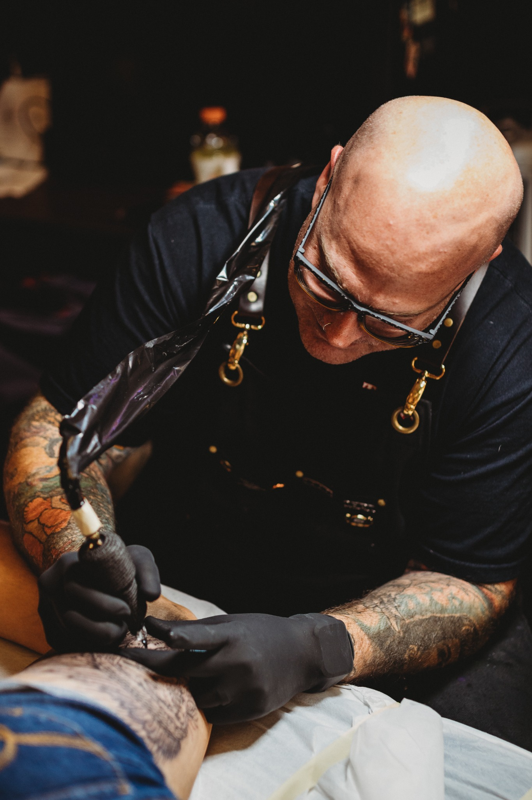

Owner • Artist • Oklahoma City
Josh Poindexter, tattoo artist in Oklahoma City.
Josh is the owner and an artist at Tornado Tattoo, creating custom tattoos in Oklahoma City since the shop opened in 2006. His portfolio includes Japanese-inspired work, horror, traditional tattoos, vivid color, black-and-gray pieces, large-scale compositions, and cover-up planning.

Artist approach
Start with the idea. Design for the body.
A strong tattoo has to do more than look good as a drawing. It needs to fit the placement, remain readable from a normal viewing distance, and hold together as the body moves. Josh approaches each project by considering the subject, scale, contrast, color, and how the composition should flow across the chosen area.
Reference images are welcome as a way to explain direction. The final artwork is developed for the individual client and placement rather than copied directly from someone else’s tattoo.
Tattoo specialties
Styles and projects Josh works in.
Every portfolio has a point of view. These are the areas most represented in Josh’s current work and the kinds of projects clients can discuss during a consultation.
Japanese Tattoos
Large-scale body flow, strong silhouettes, layered storytelling, masks, warriors, animals, florals, and bold color.
Explore Japanese work →02Cover-Up Tattoos
Consultation-led redesigns built around the size, darkness, age, placement, and condition of the existing tattoo.
Understand cover-ups →03Horror & Dark Art
Character-driven and atmospheric tattoos using contrast, texture, shadow, color, and cinematic composition.
Explore horror tattoos →04Traditional Tattoos
Bold outlines, clear shapes, confident color, recognizable subjects, and designs intended to remain visually strong.
Explore traditional work →Consultation process
What to bring when you contact Josh.
A useful consultation request gives the artist enough context to evaluate the project before discussing design and scheduling.
- The subject or story you want the tattoo to communicate
- The location on your body and an approximate size
- Whether you want color, black-and-gray, or are open to either
- Reference images that show the mood, style, or details you like
- Clear photos of any existing tattoo involved in a cover-up

Questions about booking Josh
Before you schedule.
What tattoo styles does Josh specialize in?
Josh’s current portfolio includes Japanese-inspired, horror, traditional, full-color, black-and-gray, ornamental, large-scale, and cover-up work. The best way to determine fit is to compare your idea with his portfolio and discuss it during a consultation.
Can Josh design a custom tattoo from my idea?
Yes. Bring references, themes, or visual details that explain the direction. The final design is developed to fit your body placement and the practical needs of the tattoo.
Does Josh work on sleeves and backpieces?
His portfolio includes sleeves, backpieces, and other large-scale work. These projects require planning for overall composition, individual sessions, and how separate elements connect.
How do I request an appointment with Josh?
Use the online booking link, call Tornado Tattoo at (405) 601-4445, email tornadotattoookc@gmail.com, or contact the shop through its official Instagram account.
Start your project
Bring Josh the idea you cannot stop thinking about.
Share the concept, placement, size, and references. The consultation is where the project becomes a workable tattoo plan.